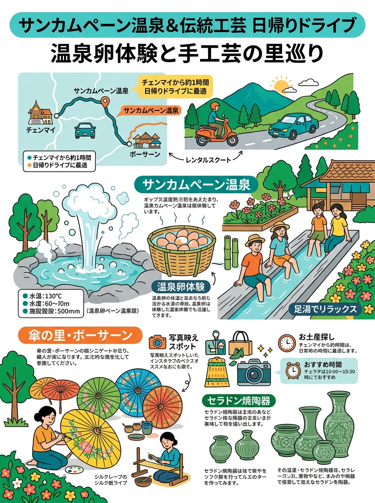
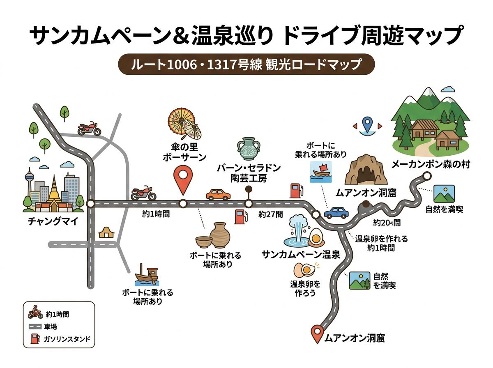

01
ドイメーサロン・雲南系華人（美斯樂 / KMT 93rd Division）
中国伝統の藍染め綿服や中山服。現在も雲南方言（中国語北京語/雲南話）と漢字文化を色濃く保持。
💡 マナー・留意点
史跡・資料館内での静粛な見学。茶館での試飲時は丁寧に対話し適正価格で茶葉を購入。冬期（12〜2月）はタイ桜（ヒマラヤザクラ）の開花期で混雑。
元義勇軍の歴史を持つドイメーサロンと、チェンライに暮らす山岳民族の衣装・文化・伝統行事の解説。
クリックすると拡大して詳細を確認・印刷できます。

旅行者の持ち歩き・印刷に適した手書き風インフォグラフィック。

位置関係やルート、全体像を俯瞰できるワイドデザイン。
現地調査および公的データに基づく最新詳細情報。
中国伝統の藍染め綿服や中山服。現在も雲南方言（中国語北京語/雲南話）と漢字文化を色濃く保持。
史跡・資料館内での静粛な見学。茶館での試飲時は丁寧に対話し適正価格で茶葉を購入。冬期（12〜2月）はタイ桜（ヒマラヤザクラ）の開花期で混雑。
藍染め手織り綿布を基調に、古銀貨、銀玉、タカラガイ（貝殻）、赤色獣毛、色鮮やかなビーズを縫い付けた精巧で立体的な銀装飾頭飾り（ウーロ型/パミ型）と脚絆刺繍。
村の境界にある「精霊門」には絶対に手を触れないこと（悪霊除けの神聖な結界）。家屋に入る際は敷居を踏まず跨ぐ。人物や子どもの撮影は必ず事前許可を得る。
山岳民族の中で最も華やかな原色の組み合わせ。ターコイズブルー、紫、ピンク、赤のサテン地に何十層もの極細カラー布テープを施した長衣、腰から垂れる虹色の細紐フリンジ（シェコー）、上半身を覆う銀胸飾り。
神聖な村の守護霊祠（アパモ・ムー）周辺での無断立ち入りや騒擾禁止。祭礼時のステップの輪を無作法に横切らない。お菓子や現金を子どもへ直接ばらまかない。
黒・濃紺の長上着の首周りから胸元を豪華に飾る「真紅の太い毛糸の襟飾り（ロー・ボウ）」。布の裏側から針を通す緻密な幾何学クロスステッチ刺繍のズボン、高く巻き上げる黒ターバン、大型銀首輪。
家屋奥の道教祭壇や神画・儀礼具に無断で触れない。高度な手刺繍布を購入する際は敬意を払い適正価格で購入。露出度の高い服装（ノースリーブ・短パン）での訪問は控える。
黒ラフは黒地ロングチュニックに赤青のストライプ布。赤ラフは黒ショートジャケットに鮮烈な赤のパッチワークと多数の銀円形ブローチ。伝統の竹製リード楽器「瓢箪笛（ナワ）」を携行。
村の祈祷所（ボエン）や聖なる儀礼空間への無断立ち入り禁止。伝統信仰とキリスト教信仰が混在するため各集落の宗教規範を尊重。子どもの頭を撫でたり触れたりしない。
青モン女性の手織り大麻布（ヘンプ）にミツロウで細密な幾何学模様を描き藍染めした「バティック（ろうけつ染め）」のプリーツスカート、幾重もの大型三日月型銀ネックレス。
家屋の敷居を踏まない。儀礼中（シャーマン「ウア・ネーン」の祈祷時）のフラッシュ撮影や儀式妨害の厳禁。病気治療や厄除けを示す目印（木の葉飾り等）がある家屋への立ち入り禁止。